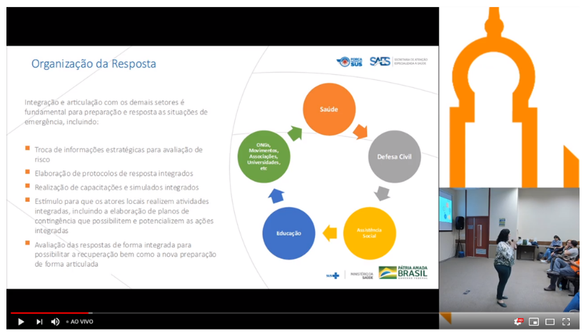
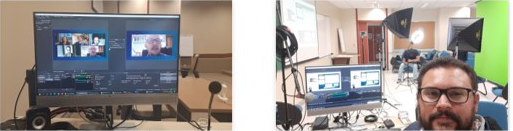
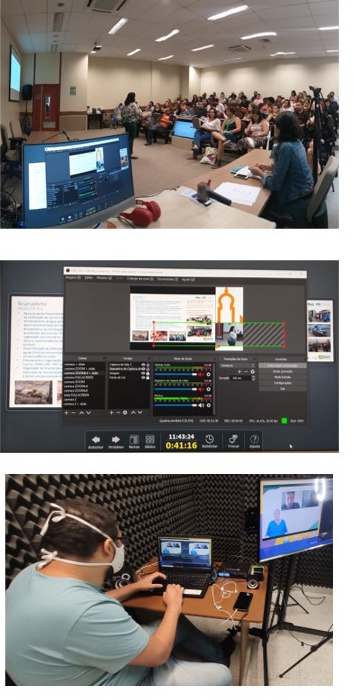

<div style="padding: 30px;display: flex;">
    <div style="display: flex;flex-direction: column;align-items: center;">
        <h1 style="margin-top: -20px;width: 580px;">Transmissões Ao Vivo</h1>
        
        
        <p style="font-size: 18px;">As transmissões aparecem em tempo real no site da Fiocruz Brasília</p>
    </div>
    <div>
        
    </div>
    <div style="width: 30px;height: 500px;background-color: #ffc000;position: absolute;top: 0px;right: 0px;"></div>
</div>